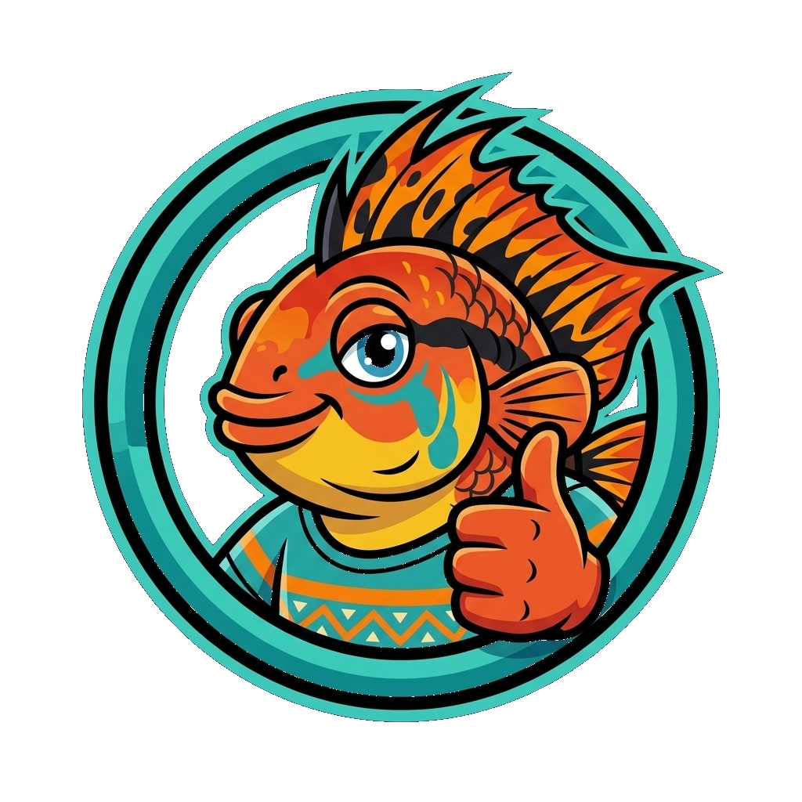

AcquarioPassoPasso.it
L'acquario d'acqua dolce reso semplice, visuale e senza stress. Dalla prima goccia d'acqua all'ecosistema maturo.
Stiamo lavorando per portare tutto online!

Cosa potrai fare con il nostro Tool Interattivo
Uno strumento visuale intuitivo per progettare il tuo acquario ideale prima ancora di fare acquisti, prevenendo errori e delusioni.
1. Vasca & Litri Reali
Calcola all'istante il litraggio netto vs lordo, lo spessore dei vetri ideale e il peso totale da supportare sul mobile. Dimensioni personalizzate per ogni spazio.
2. Fondo & Hardscape
Calcolo esatto dei kg di substrato fertile e sabbia. Verifica preventiva sull'impatto di rocce calcaree vs neutre e radici su pH, GH e durezza dell'acqua.
3. Flora & Luce (Lumen/L)
Configura il layout verde per primo piano, centro e sfondo. Il sistema calcola il fabbisogno di Lumen per Litro, fertilizzazione e necessità di impianto CO2.
4. Popolamento Intelligente
Algoritmo di compatibilità tra specie: verifica incrociata di pH, temperatura, litri minimi, aggressività, biocarico biologico e convivenza con caridine.
Database Certificato e Costantemente Aggiornato
Tutti i parametri chimici, biologici e comportamentali a portata di clic, strutturati con rigore scientifico e spiegati in modo comprensibile.
Schede Pesci Dettagliate
Oltre 12 famiglie tassonomiche: valori chimici di sopravvivenza ed ottimali, dimorfismo sessuale, ratio maschi/femmine, abitudini di nuoto e comportamento riproduttivo.
Schede Piante & Muschi
Guida completa a crescita lenta, media o rapida. Esigenze luminose, sensibilità ai fertilizzanti, tasso di assorbimento nitrati e tecniche di potatura per aquascaping.
Biotopi del Mondo
Ricrea fedelmente gli habitat naturali: dalle acque ambrate del Rio delle Amazzoni ai fiumi centroamericani, fino ai Grandi Laghi Africani e torrenti asiatici.
Guide Chiare per Principianti e Appassionati
Basta dubbi e pareri contrastanti. Guide step-by-step per accompagnarti in ogni fase dell'avventura acquariofila.
Il Ciclo dell'Azoto Senza Panico
Come avviare il filtro, insediare i batteri nitrificanti e superare il picco dei nitriti (NO2) senza rischiare la vita dei tuoi primi pesci.
Preparazione & Piantumazione
Differenza tra vasetto con lana di roccia e cup in-vitro sterile: pulizia delle radici, rimozione del gel e corretto inserimento con pinzette.
Manutenzione & Zero Alghe
La routine semplice per cambi d'acqua parziali, sifonatura mirata, pulizia delle spugne del filtro e bilanciamento dei nutrienti.
Etica & Consigli Trasparenti
Nessun interesse commerciale a venderti prodotti inutili. Solo consigli onesti ed efficaci per il benessere reale degli animali e la tua soddisfazione.
Stiamo lavorando per portare tutto online!
Il database di piante e pesci è in continuo ampliamento e i motori di calcolo sono in fase di implementazione. Salva questo indirizzo nei tuoi preferiti: molto presto AcquarioPassoPasso.it diventerà la tua guida di riferimento per qualsiasi allestimento d'acqua dolce!